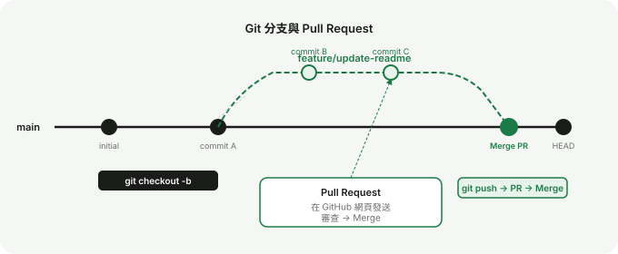

Lab 3
協作與 Pull Request 入門
分支與 Pull Request 是 GitHub 協作的核心機制。這個 Lab 帶你完整走一遍：從建立分支、推送、到提出 PR 並合併。
練習目標
- 建立一個新的功能分支
- 在分支上做修改並 commit
- 推送分支到 GitHub
- 發送 Pull Request 並完成合併
先備條件
- 已完成 Lab 1 與 Lab 2
- GitHub 上有一個你有權限操作的 repository
什麼是分支？
分支（branch）是 Git 讓你在不影響主線的情況下獨立開發的機制。你可以把它想成一條平行的工作軌道。

main是預設的主分支，通常是穩定、可發布的版本- 每次要新增功能或修改內容，建立一個新分支來做
- 做完後透過 Pull Request 把分支合併回
main
為什麼不直接改 main？
分支讓你的修改在被審查、確認無誤之前，不會影響主線。特別是多人協作時，每個人各自的工作不會互相干擾。
操作步驟
1
確認目前在 main 分支
git branch前面有 * 號的就是目前所在分支。如果不在 main，先切換：
git checkout main
git pull
2
建立並切換到新分支
分支名稱用小寫、以 - 分隔，描述這次要做什麼：
git checkout -b feature/update-readme
3
做修改並 commit
編輯任意一個檔案（例如修改 README.md 加一行說明），然後：
git add .
git commit -m "update README with project description"
4
推送分支到 GitHub
git push -u origin feature/update-readme
5
在 GitHub 建立 Pull Request
推送後打開 GitHub，頁面上會出現黃色提示列，點擊 Compare & pull request。填寫 PR 標題與說明，確認 base 是 main、compare 是你的分支，點擊 Create pull request。
6
合併 Pull Request
在 PR 頁面確認 diff 內容無誤後，點擊 Merge pull request → Confirm merge。分支的變更就會合併進 main。
7
在本機同步最新 main
git checkout main
git pull本機的 main 現在與遠端同步，包含剛才合併的變更。
成功條件
- GitHub 上的
main分支包含你的修改 - PR 顯示為 Merged 狀態
- 本機
main執行git log --oneline可看到新的 commit
常見問題
Merge conflict 衝突怎麼辦？
當兩個分支修改了同一個檔案的同一個位置，Git 無法自動決定用哪個版本，會產生衝突。VS Code 內建衝突解決介面，會標示出 <<<<<< 和 >>>>>> 的區塊，讓你選擇保留哪個版本，儲存後再 add、commit 完成合併。